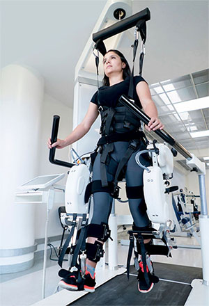

What are Medical Robots?
Medical Robots are robots used in the assitance of medical sciences. Ranging from rehabilitation robots to ones that assist in major surgeries. The surgical robots surgeons use have tow appendages that the surgeon uses with another machine that make the appendages act as another pair of arms, helping the surgeon perform more precies actions. If you would like to learn more about medical robots click the link below or watch the informative video.

source 1 (above) depicts someone going through rehabiliton with the assistance of a rehabiliton robot.
Medical Robots